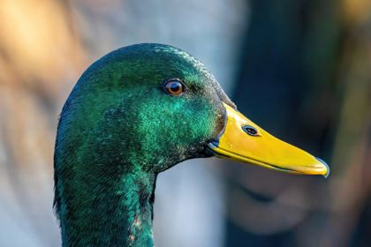
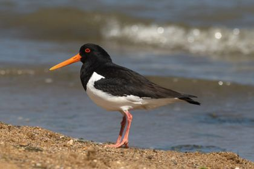
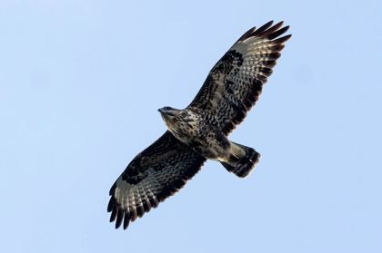
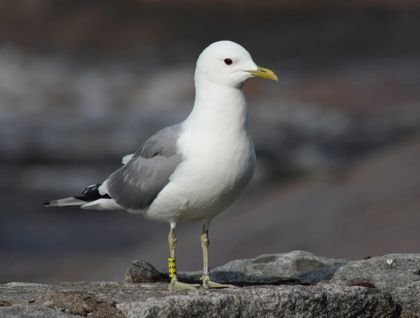
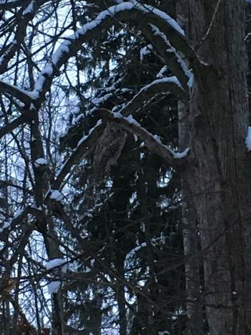
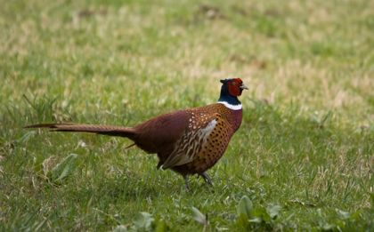
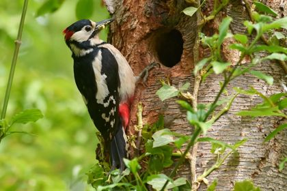
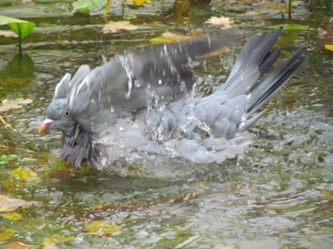
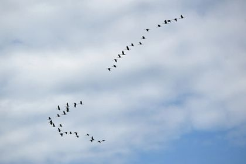

Arter-menyn som fälls ut i sidhuvudet
Grupperna och vanliga arter direkt från alla sidor
Allt i samma rad som 1.3-webben: mossgrön menyrad, papper, rost och aprikos. Det som är nytt är markerat NYTT. Kategorierna är samma 15 grupper som i appens uppslagsverk, med antal granskade arter i varje.
"Arter" NYTT blir första länken i menyn. Resten av menyraden är som i 1.3. Menyn är ett tillägg: den som hoppar över den når samma sidor via kategoriraden nedan.
180 vanliga fåglar i Sverige och Norden, med foton, kännetecken och läten. Samma uppslagsverk som finns i appen, där du också kan känna igen fågeln på plats.

Änder & gäss18 arter
Vadare14 arter
Rovfåglar10 arter
Måsar & tärnor9 arter
Ugglor8 arter
Hönsfåglar7 arter
Hackspettar5 arter
Duvor4 arter
Tranor & rallar4 arter… plus Alkor, Doppingar & lommar, Hägrar & storkar, Havsfåglar och Övriga. Under korten: hela listan A till Ö.
Kategoriraden NYTT ligger kvar överst på alla artsidor och går att svepa i sidled. Den aktiva gruppen är rostfärgad. Sökfältet filtrerar listan direkt i webbläsaren, utan server.

Den största av våra mesar och en av fåglarna du oftast ser vid fågelbordet. Den finns i hela Sverige året runt.
Ett ringande ti ta, ti ta som hörs redan i februari. Talgoxen har ovanligt många läten, så ett okänt läte i trädgården är ofta just en talgoxe.
Stannfågel i hela landet. Vanligast i lövskog, parker och trädgårdar. På vintern söker den sig till fågelmatningar och på våren flyttar den gärna in i en holk.


Sidfoten får en kolumn Arter NYTT och en rad Vanliga arter NYTT (tolv länkar). Allt annat är som i 1.3, även "Byggd av AlbIT" längst ned. Sidfoten syns på alla sidor, även startsidan och bloggen, så varje sida länkar in till arterna.
Den största av våra mesar och en av fåglarna du oftast ser vid fågelbordet.
Klicka i det du vill behålla (flera val går bra). Svara gärna i terminalen också.